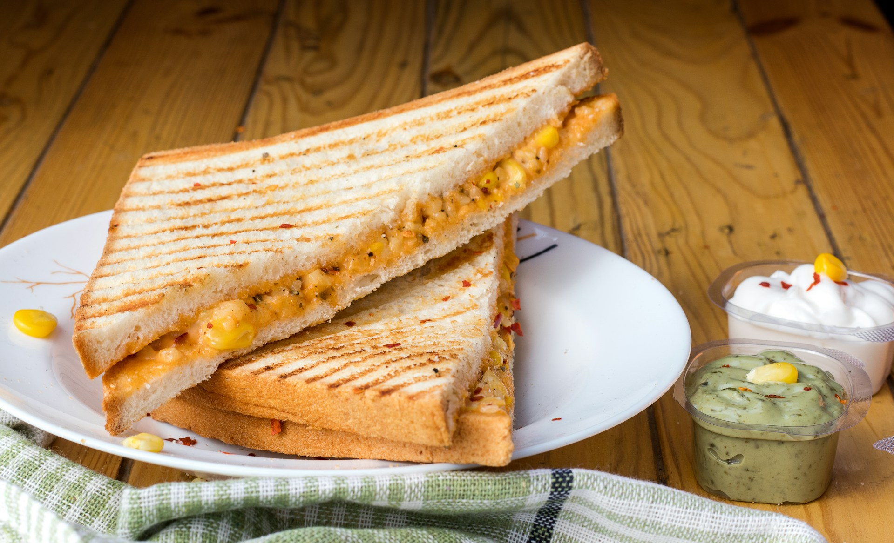

Grilled Cheese Sandwich
Description
There's nothing quite like a perfectly crafted grilled cheese sandwich. It's the ultimate comfort food, a warm and melty hug between two slices of bread. But achieving that ideal level of golden crisp on the outside and gooey cheese heaven on the inside can be trickier than it seems. Fear not, cheese lovers! This recipe will guide you through every step, from choosing the right bread and cheese to mastering the perfect heat, so you can create a grilled cheese masterpiece in minutes.
Ingredients
- White Bread
- Cheddar Cheese
- Butter
Steps
- Butter the bread on one side and place the bread butter-side down on a hot skillet.
- Top with cheese, then place another slice of bread on top (butter-side up).
- Cook until the bottom slice is lightly browned, then flip.
- Continue cooking until the cheese is melted.